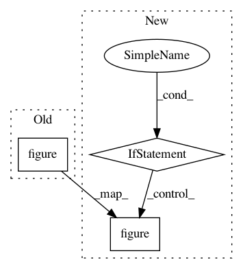

692d1131c0f77f85a9068f22ae5e7bf26352a0b2,examples/noise_reduction_spectral_subtraction.py,,,#,29
Before Change
min_val = -80
max_val = -40
plt.figure()
plt.subplot(3, 1, 1)
plt.specgram(noisy_signal[:n-hop], NFFT=256, Fs=fs_s, vmin=min_val, vmax=max_val)
plt.title("Noisy Signal")
plt.subplot(3, 1, 2)
After Change
signal_norm = signal / np.abs(signal).max()
if plot_spec:
min_val = -80
max_val = -40
plt.figure()
plt.subplot(3, 1, 1)
plt.specgram(noisy_signal[:n-hop], NFFT=256, Fs=fs_s,
vmin=min_val, vmax=max_val)
plt.title("Noisy Signal")
plt.subplot(3, 1, 2)
plt.specgram(processed_audio[hop:n], NFFT=256, Fs=fs_s,
vmin=min_val, vmax=max_val)
plt.title("Denoised Signal")
plt.subplot(3, 1, 3)
plt.specgram(signal_norm[:n-hop], NFFT=256, Fs=fs_s,
vmin=min_val, vmax=max_val)
plt.title("Original Signal")
plt.tight_layout(pad=0.5)
plt.show()
In pattern: SUPERPATTERN
Frequency: 3
Non-data size: 3
Instances
Project Name: LCAV/pyroomacoustics
Commit Name: 692d1131c0f77f85a9068f22ae5e7bf26352a0b2
Time: 2019-01-08
Author: ebezzam@gmail.com
File Name: examples/noise_reduction_spectral_subtraction.py
Class Name:
Method Name:
Project Name: shakedzy/dython
Commit Name: ff5d0eeb0bd3860dc253e37532952232e083b456
Time: 2020-04-17
Author: shakedzy@gmail.com
File Name: dython/model_utils.py
Class Name:
Method Name: roc_graph
Project Name: shakedzy/dython
Commit Name: 755535bc3a8ce5dc35c9c70e188d68cf12d6ef01
Time: 2019-12-02
Author: bauke.brenninkmeijer@gmail.com
File Name: dython/nominal.py
Class Name:
Method Name: associations